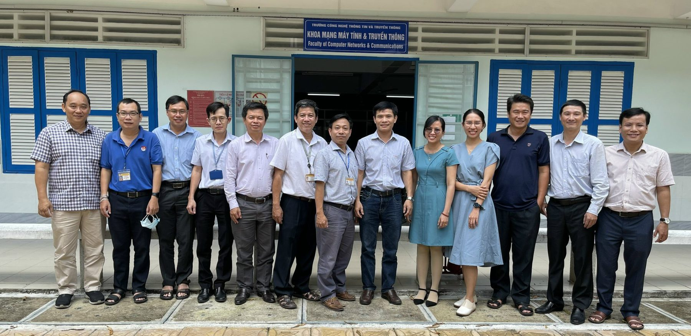
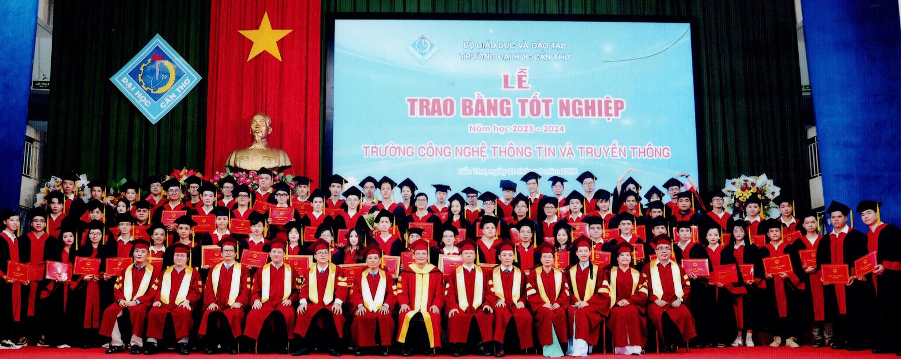
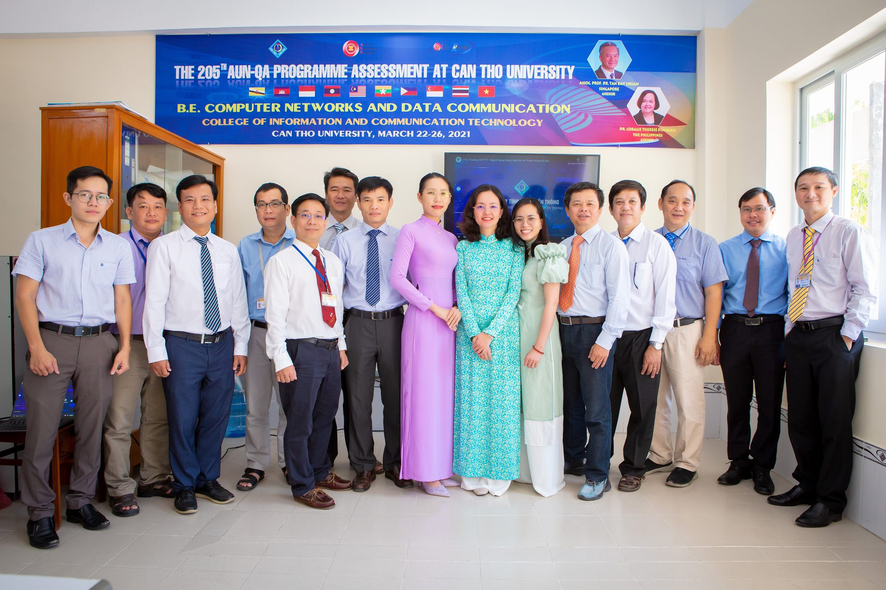

AUN-QA 2021–2026
Kỹ sư Mạng máy tính & Truyền thông dữ liệu
Mã ngành 7480102 — chương trình đại trà, thời gian đào tạo 4,5 năm.
Khoa Mạng máy tính & Truyền thông phụ trách ba chương trình đào tạo kỹ sư bậc đại học, trong đó ngành Mạng máy tính và Truyền thông dữ liệu đã đạt chứng nhận kiểm định AUN-QA giai đoạn 2021–2026 và đang được đánh giá lại (chu kỳ II).


Mã ngành 7480102 — chương trình đại trà, thời gian đào tạo 4,5 năm.

Hơn 60% học phần giảng dạy bằng tiếng Anh, chuẩn đầu ra cao hơn chương trình đại trà.

Mã ngành 7480202 — bảo mật hệ thống, an ninh mạng, mật mã và điều tra số.
Ngành Mạng máy tính và Truyền thông dữ liệu nghiên cứu những nguyên lý kết nối các máy tính thành mạng; cách thiết kế, xây dựng một hệ thống mạng từ mạng nội bộ cho đến mạng diện rộng có kết nối toàn cầu; sự trao đổi thông tin, dữ liệu giữa các thành phần trên mạng; phát triển ứng dụng mạng, ứng dụng Web, xử lý dữ liệu lớn và tính toán hiệu năng cao.
Chương trình đào tạo MMT-TTDL nhằm đào tạo kỹ sư có kiến thức cơ sở lý thuyết, toán và khoa học được sử dụng trong ngành. Sinh viên được trang bị kiến thức cơ sở và chuyên sâu, khả năng phân tích, thiết kế, đề xuất giải pháp đáp ứng nhu cầu của một tổ chức hay cá nhân; phát triển ứng dụng mạng, phần mềm trên thiết bị di động, phần mềm tự do nguồn mở, ứng dụng web, dịch vụ web, mô hình client-server, tính toán lưới, điện toán đám mây, dữ liệu lớn, giải thuật song song, phân tán và Internet kết nối vạn vật. Sinh viên có khả năng giao tiếp bằng Anh ngữ thông thường và chuyên ngành.


Mục tiêu của chương trình là đào tạo kỹ sư MMT-TTDL có kiến thức chuyên môn cao, kỹ năng lập trình chuyên nghiệp, sử dụng thành thạo các công cụ và giải pháp tiên tiến để giải quyết các yêu cầu thực tiễn về an ninh mạng và tính toán hiệu năng cao; có kiến thức cơ bản về toán, khoa học chính trị, xã hội, pháp luật, giáo dục thể chất và quốc phòng — an ninh.
Sinh viên có khả năng làm việc độc lập hoặc theo nhóm, có đạo đức và sức khoẻ; có năng lực ngoại ngữ, nghiên cứu khoa học chuyên sâu, sáng tạo và khởi nghiệp, đáp ứng yêu cầu hoàn thiện bản thân người học và nhu cầu của xã hội về nhân lực chất lượng cao, phục vụ phát triển kinh tế — xã hội vùng và quốc gia trong xu thế Công nghiệp 4.0.
Ngành An toàn thông tin đào tạo kỹ sư có khả năng bảo vệ an toàn thông tin số, các hệ thống thông tin và hệ thống mạng; phòng ngừa, phát hiện và ngăn chặn kịp thời các hoạt động truy cập, sửa đổi, phát tán, phá hoại và tấn công bất hợp pháp nhằm vào hệ thống thông tin của một tổ chức; đề xuất các giải pháp bảo mật/an toàn thông tin đồng thời triển khai giám sát, đánh giá, kiểm định an toàn thông tin; xử lý các sự cố liên quan đến bảo mật hệ thống.
Sinh viên được trang bị đầy đủ kiến thức và kỹ năng cần thiết về bảo mật/an ninh dữ liệu, hệ thống thông tin và mạng máy tính; kiến thức chuyên sâu về kỹ thuật mật mã, an toàn hệ điều hành, cơ sở dữ liệu, an toàn ứng dụng web và Internet, an toàn trong giao dịch và thương mại điện tử, các kỹ thuật tấn công và xâm nhập mạng, mô hình bảo vệ và kỹ thuật phòng thủ chống tấn công đột nhập; khả năng phân tích và phán đoán tình huống; thực hành các tình huống thực tế cho việc phòng chống, phát hiện và ngăn chặn các cuộc tấn công hệ thống.

Chương trình đào tạo áp dụng cho từng khóa tuyển sinh được Đại học Cần Thơ công bố tại trang Chương trình đại học. Mở trang của khóa cần xem, chọn Trường Công nghệ thông tin và truyền thông rồi chọn ngành; mỗi học phần có liên kết tới đề cương chi tiết.
Chuyên viên hệ thống mạng Cisco — Cisco Certified Network Associate (CCNA). Chương trình CCNA đi sâu vào các kiến thức, kỹ năng căn bản và quan trọng của công nghệ mạng máy tính như các lớp trong mô hình OSI, LAN, WAN, định tuyến (routing), chuyển mạch (switching) và cơ bản về an ninh mạng; giúp học viên có đủ khả năng thiết kế, lắp đặt, bảo trì và sửa chữa hệ thống mạng trong môi trường Internet/Intranet ngay sau khi tốt nghiệp.
Sau khi hoàn thành khóa học, học viên nhận Chứng nhận Hoàn tất Khóa học do Học viện Mạng Cisco cấp và có đủ kiến thức, kỹ năng để tham dự kỳ thi lấy chứng chỉ CCNA (200-301) quốc tế của Cisco Systems Inc. thông qua các trung tâm khảo thí ủy quyền của Pearson VUE.
Xem chỉ tiêu, tổ hợp xét tuyển và thông tin liên hệ tư vấn tuyển sinh.